O DNA da Pecuária de Lucro
Os fundamentos técnicos que transformam qualquer membro do time em um especialista respeitado pelo pecuarista. Dominar este módulo é o pré-requisito para tudo que vem depois.
Teste de Nivelamento
Antes de começar o conteúdo, faça o teste de nivelamento para medirmos seu ponto de partida. Sem pressão — o objetivo é identificar o que você já sabe sobre pecuária.
Teste de Nivelamento — Módulo 1
Este teste avalia seu conhecimento inicial sobre raças bovinas, ciclos da pecuária, geografia de MT e RO, glossário técnico e mercados. Responda com honestidade — os resultados são individuais e servem apenas para mapear o aprendizado da equipe.
⏱ Duração estimada: 10 a 15 minutos
✏️ Iniciar Teste de NivelamentoVídeo Introdutório
Uma visão geral do módulo em formato de vídeo para você entender o contexto antes de mergulhar no conteúdo teórico.
Conteúdo Teórico
O material completo do DNA da Pecuária de Lucro — raças, ciclos, glossário, personas, geografia, qualidade, mercados e formação de preços.
1.1 Fundamentos Raciais: A Dualidade da Pecuária (Indicus vs. Taurus)
No cenário da pecuária global, e especialmente na brasileira, o sucesso do negócio começa na escolha genética correta para cada ambiente e objetivo de mercado. Entender a distinção entre as subespécies de gado bovino não é apenas uma questão de zoologia, mas de estratégia financeira e eficiência produtiva.
1.1.1 Bos Indicus (Zebuínos): A Resistência do Trópico
- Origem: Sul da Ásia (Índia). Selecionados por milênios para suportar calor extremo, longas caminhadas e forragens fibrosas.
- Chegada ao Brasil: As primeiras importações começaram em 1868 (Bahia), mas a grande explosão ocorreu nas décadas de 1910 e 1960 com as importações históricas da Índia.
- Características Chave: Presença do cupim (reserva de gordura e energia), barbela desenvolvida, orelhas longas e pele pigmentada com alta densidade de glândulas sudoríparas.
- A Vantagem Estratégica: Alta resistência ao calor, tolerância natural a ectoparasitas (carrapatos e mosca-do-chifre) e eficiência na digestão de pastagens tropicais de menor qualidade.
- O Papel no Portfólio: É o "gado de guerra", ideal para a fase de cria e recria em pastagens extensivas sob sol forte.
1.1.2 Nelore (O Soberano)
- Histórico & Origem: Originário da região de Ongole, na Índia. Entrou no Brasil no final do século XIX, mas dominou o Centro-Oeste e o Norte a partir das décadas de 1970 e 1980, impulsionado pela abertura das fronteiras agrícolas.
- Estimativa de Rebanho:
- Mato Grosso: Representa cerca de 90% do rebanho mato-grossense (aproximadamente 30,6 milhões de cabeças do rebanho total de ~34 milhões).
- Rondônia: Base absoluta de sustentação, compondo cerca de 85% do rebanho rondoniense (aproximadamente 14,5 milhões de cabeças do total estadual de ~17 milhões).
- Por que domina o mercado local: É o animal que melhor se adaptou ao regime de calor contínuo e grandes extensões de pasto da Amazônia Legal e do Cerrado.
- Destaque 2026: O Nelore Pintado tem ganhado uma valorização astronômica no mercado de elite e genética, com recordes recentes de preços em leilões e grandes campeonatos na Expozebu 2026.
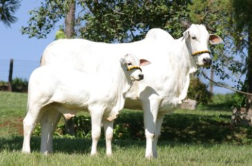
1.1.3 Brahman
- Histórico & Origem: Desenvolvido nos Estados Unidos no início do século XX a partir do cruzamento de quatro raças zebuínas indianas (Guzerá, Nelore, Gir e Krishna Valley). Chegou ao Brasil em 1994, após a abertura das importações americanas.
- Entrada no MT/RO: Ganhou força nos anos 2000. No MT e em RO, destaca-se em projetos de cruzamento por sua alta capacidade de carcaça e excelente docilidade no manejo.
- Diferencial: Musculatura mais robusta que o Nelore tradicional, sendo muito utilizado para dar "choque de sangue" em plantéis que precisam de ganho de peso precoce sem perder a casca rústica do zebuíno.
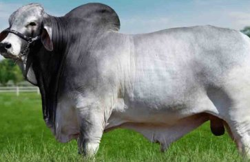
1.1.4 Tabapuã
- Histórico & Origem: É o "Zebu Brasileiro", formado no estado de São Paulo (Fazenda Água Milagrosa) a partir da década de 1940, utilizando uma base de gado Nelore, Guzerá e Gir mochos.
- Entrada no MT/RO: Introduzido a partir dos anos 1980. No Mato Grosso e nas regiões de cria de Rondônia, é altamente valorizado pelo excelente ganho de peso a pasto e pela habilidade materna das vacas.
- Diferencial: É um gado mocho (sem chifres) por natureza, o que reduz drasticamente os acidentes no curral, facilita o transporte em caminhões e diminui o estresse no manejo de apartação.
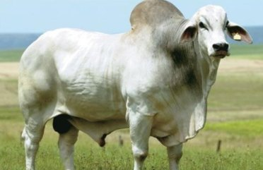
1.1.5 Guzerá
- Histórico & Origem: Originário da região desértica de Kankrej, na Índia. Foi a primeira raça zebuína a chegar ao Brasil de forma estruturada, ainda em 1870. No Mato Grosso, foi fundamental no início do século XX para "azebuar" o gado antigo da região.
- Diferencial: Considerado o "trator" do semiárido pela sua resistência extrema à seca. No MT e RO, é amplamente utilizado em cruzamentos para a produção de fêmeas F1 rústicas e com alta capacidade leiteira (Guzolando) ou para imprimir estrutura óssea pesada nos bezerros de corte.
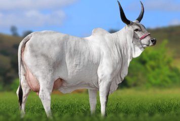
1.1.6 Gir (Foco em Leite e Cruzamento)
- Histórico & Origem: Originário da península de Kathiawar, na Índia. Importado em larga escala para o Brasil a partir de 1906. Embora o MT e RO tenham focos majoritários em corte, o Gir Leiteiro é a base essencial para a formação do Girolando, garantindo o abastecimento e a sustentabilidade das bacias leiteiras das regiões de Campo Grande/Cuiabá e das pequenas propriedades rondonienses.
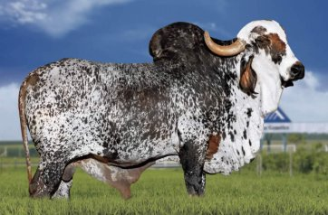
1.1.7 Bos Taurus (Taurinos): A Excelência da Carcaça
- Origem: Europa e Ásia. Evoluíram por milênios em ambientes de clima temperado e frio.
- Chegada ao Brasil: Os primeiros taurinos (de origem ibérica) chegaram com os colonizadores em 1534. As raças britânicas e continentais modernas (Angus, Hereford, Simental) entraram a partir do início do século XX, concentrando-se inicialmente no Sul do país.
- Características Chave: Ausência de cupim, couro mais grosso, pelo mais denso e carcaça mais compacta, com alta deposição de tecido muscular.
- A Vantagem Estratégica: Precocidade sexual extrema, acabamento rápido de carcaça, maior deposição de gordura intramuscular (mármore) e carne com fibras finas e macias.
- O Papel no Portfólio: É o gado focado em altíssimo valor agregado. Exige nutrição de ponta (sempre associado ao confinamento ou semiconfinamento no Centro-Oeste) e é o favorito para atender frigoríficos que exportam para mercados premium e cotas internacionais.
O consultor de alta performance deve entender que no Mato Grosso e em Rondônia, a presença de raças taurinas é estritamente estratégica e focada no Cruzamento Industrial via IATF (Inseminação Artificial em Tempo Fixo). Como o clima de estados como MT e RO é desafiador (calor intenso e pressão de parasitas), o choque de sangue (heterose) entrega o animal perfeito: união da resistência zebuína com a precocidade taurina.
1.1.9 Angus (Aberdeen Angus)
- Histórico & Origem: Originário dos condados de Aberdeenshire e Angus, na Escócia. Entrou no Brasil em 1906 pelo Rio Grande do Sul. Durante quase um século ficou restrito ao Sul devido ao clima. Sua história mudou radicalmente nos anos 2000 com a tecnologia da IATF.
- Estimativa no MT/RO: É a raça taurina líder disparada em sêmen comercializado. Estima-se que os lotes de cruzamento F1 Angus/Nelore movimentem mais de 2,5 a 3 milhões de cabeças por ano na engorda e confinamento do Mato Grosso, com crescimento acelerado nos polos de confinamento de Rondônia.
- Vantagem Comercial: Precocidade extrema e acabamento de gordura exigido pelos frigoríficos (Protocolo Carne Angus Certificada). O produtor do MT/RO busca o Angus para antecipar o giro do caixa e garantir o bônus financeiro na balança industrial.
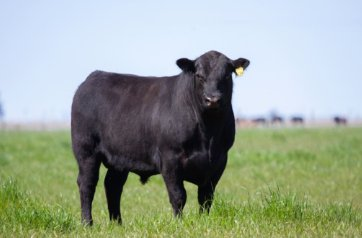
1.1.10 Senepol (O Taurino Adaptado)
- Histórico & Origem: Desenvolvido no Caribe (Ilha de Saint Croix) no início do século XX, cruzando a raça N'Dama (africana) com Red Poll (britânica). Chegou ao Brasil em 2000.
- Aplicação no MT/RO: É o único taurino puro que consegue realizar monta natural a campo sob o calor de 40°C do Mato Grosso e de Rondônia. É a solução perfeita para o pecuarista que deseja produzir bezerros de qualidade taurina, mas não possui estrutura para fazer inseminação artificial (IATF).
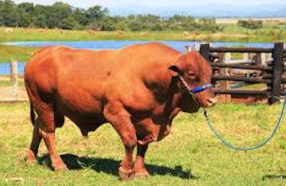
1.1.11 Brangus e Braford (Sintéticos / Compostos)
- Histórico & Origem: Desenvolvidos nas Américas (meados do século XX) fundindo raças britânicas com o Zebu (geralmente 5/8 Taurino e 3/8 Zebu). Consolidaram-se fortemente no MT a partir dos anos 1990.
- Destaque Local: O Brangus consolidou-se como uma verdadeira "raça de guerra" nas regiões do Médio-Norte, Araguaia e nos solos mais pesados de Rondônia. Garante o ganho de peso e o mármore do Angus sem sofrer com a pressão severa de carrapatos do bioma tropical.
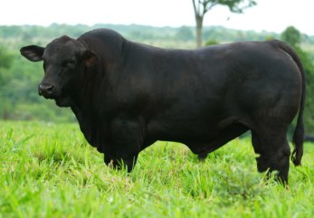
1.1.12 Simental
- Histórico & Origem: Originário do Vale do Rio Simme, na Suíça. Chegou ao Brasil em 1904. No Centro-Oeste, a linhagem sul-africana (Simental Simbrasil) foi a que melhor se adaptou. No MT, destaca-se por dar porte, comprimento de carcaça e muito peso na balança aos bezerros de reposição.
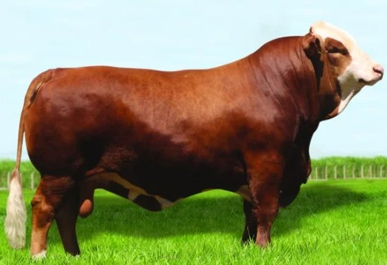
1.1.13 Caracu e Pantaneiro (Raças Crioulas / Adaptadas)
- Caracu: Taurino ibérico trazido pelos colonizadores portugueses. Passou por mais de 400 anos de seleção natural nos cerrados brasileiros. Entrega rusticidade máxima, longevidade e é muito buscado para produzir fêmeas de reposição com alta habilidade materna.
- Pantaneiro: Raça nativa e patrimônio genético do Pantanal Mato-Grossense. É o único animal do mundo capaz de suportar as alternâncias severas de meses de inundação e meses de seca estrita. Possui cascos extremamente duros e adaptados à umidade, sendo essencial para manter a pecuária sustentável daquela região ecológica.
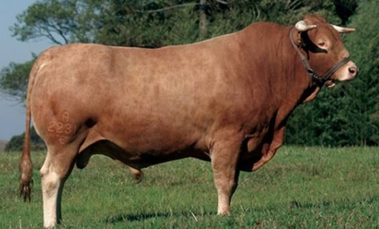
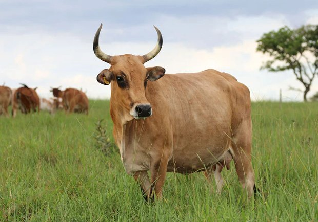
1.2 – Ciclos e Mercados: A Engrenagem do Lucro
A pecuária de corte é dividida em três fases principais. O vendedor de elite identifica em qual fase o cliente está para oferecer a solução de liquidez (venda) ou de reposição (compra) correta.
As três fases da pecuária de corte e a oportunidade Gado Certo em cada uma
1.2.1 Cria: A Fábrica de Bezerros
É o início de tudo. O pecuarista mantém um rebanho de matrizes (vacas) para produzir e vender bezerros.
- O Ativo: Vacas, touros e bezerros de desmame.
- Duração: Da concepção à desmama (aprox. 7 a 9 meses após o nascimento).
- A "Dor" do Criador: O fluxo de caixa é lento (ele "colhe" uma vez por ano). Ele depende muito do preço do bezerro no mercado.
- Oportunidade GC: Ajudar o criador a escoar grandes lotes de bezerros padronizados para recriadores. GC traz aumento de valorização e capilaridade de diferentes compradores mostrando o gado apenas uma única vez. Além de também ajudar trazendo reposição de vacas: matrizes prenhes e paridas.
1.2.2 Recria: O Estirão do Animal
É a fase intermediária e, geralmente, a mais longa. O objetivo é transformar o bezerro desmamado em um animal adulto (garrote/boi magro) com estrutura óssea e muscular.
- O Ativo: Bezerros, novilhas e garrotes.
- Duração: Pode durar de 12 a 24 meses, dependendo da nutrição.
- A "Dor" do Recriador: Ele é um "comprador profissional". Ele precisa comprar o bezerro barato (reposição) e ganhar peso no pasto com baixo custo.
- Oportunidade GC: Localizar bezerros de qualidade com frete viável. O recriador é o cliente que mais gira estoque.
1.2.3 Engorda (Terminação): O Toque Final
A fase onde o animal deposita gordura e atinge o peso de abate. Pode ser feita a pasto, TIP (Terminação Intensiva a Pasto) ou Confinamento.
- O Ativo: Boi magro, novilhas gordas e Boi Gordo.
- Duração: Curta (geralmente 90 a 120 dias em confinamento).
- A "Dor" do Terminador: Margem apertada. Ele é um industrial que transforma grão (milho/DDG) em carne. Ele precisa vender o boi gordo no "pico" da arroba.
- Oportunidade GC: Conectar o terminador com o recriador, para comprar o boi magro certo para entrar no cocho.
1.2.4 O Conceito de "Ciclo Completo"
- O ciclo completo caracteriza-se pela execução das três fases produtivas — cria, recria e engorda — dentro da mesma estrutura zootécnica.
- Vantagem: Maior segurança biológica e menor dependência de compra externa.
- Desafio: Gestão complexa e necessidade de grandes extensões de área.
- Oportunidade GC: O pecuarista no ciclo completo que intensifica a fazenda, ele não tem a quantidade de bezerros e garrotes necessários para a terminação, então mesmo ele tendo a criação de bezerros, mesmo assim ele precisa comprar diferentes categorias, de vacas, bezerros e ou garrotes. Transformando a Gado Certo na parceira ideal para originar esses animais com o padrão e a agilidade que a sua estrutura intensificada exige.
O mercado de pecuária é um sistema de vasos comunicantes.
- Se o preço do Boi Gordo sobe no frigorífico, o terminador corre para comprar Boi Magro.
- Isso faz o recriador buscar mais Bezerros.
- O que valoriza a conta do Criador.
Tarefa para o Time: Ao abordar um cliente, a primeira pergunta "mental" deve ser: Em que fase do ciclo ele está hoje e qual o próximo passo dele? Se ele está terminando, ele vai precisar de reposição em breve. Antecipe-se.
1.3 – Glossário da Pecuária: O Idioma do Mercado
O glossário é o "dicionário de guerra" do time. Para o vendedor ser respeitado pelo pecuarista, ele não pode hesitar ao ouvir esses termos.
Aqui está o glossário expandido e organizado por categorias estratégicas:
Domine os termos para converter técnica em autoridade e autoridade em venda.
1.3.1 Indicadores de Performance (O que o cliente mede)
- GMD (Ganho Médio Diário): É o peso que o animal ganha por dia (ex: 800g/dia). Essencial para calcular quando o lote estará pronto.
- @ (Arroba): Unidade de medida que equivale a 15kg de carcaça. No Brasil, o preço do gado é sempre por arroba.
- Rendimento de Carcaça: A porcentagem do peso do animal vivo que vira carne (geralmente entre 50% e 56%).
- Taxa de Lotação: Número de animais por hectare (UA/ha). Mede a eficiência do uso da terra.
- UA (Unidade Animal): Unidade de referência que equivale a um animal de 450kg.
1.3.2 Tecnologias e Manejo (O "Como" se produz)
- IATF (Inseminação Artificial em Tempo Fixo): Protocolo que sincroniza o cio das vacas para inseminar todas em um único dia. Melhora a genética e padroniza o lote.
- TIP (Terminação Intensiva a Pasto): Engorda acelerada fornecendo grande quantidade de ração diretamente no pasto, sem necessidade de curral de confinamento.
- Confinamento: Sistema onde o gado fica em piquetes fechados recebendo dieta 100% no cocho para engorda rápida (fase final).
- Semiconfinamento: Sistema que combina pastagem com suplementação no cocho, equilibrando custo e velocidade de terminação.
- Creep Feeding: Cocho com acesso restrito apenas aos bezerros (as vacas não entram), para que eles comam ração enquanto ainda mamam. Antecipa a desmama.
1.3.3 Nutrição e Insumos (O "Combustível" do boi)
- DDG (Distillers Dried Grains): Resíduo seco de destilaria de milho. Proteína barata e eficiente, muito comum no Mato Grosso.
- WDG (Wet Distillers Grains): É a versão úmida do DDG. Mais barata, mas difícil de transportar e armazenar por muito tempo.
- Suplementação: Sal mineral, proteinado ou ração entregue no pasto para suprir o que a grama não entrega.
1.3.4 Mercado e Comercialização (Onde o dinheiro troca de mãos)
- Boi China: Macho jovem (até 30 meses/4 dentes) que atende às exigências de exportação para a China. Geralmente paga um Prêmio (valor extra por arroba).
- Ágio: A diferença de preço (em %) que você paga a mais na arroba do bezerro em relação à arroba do boi gordo. Ex: Se o boi vale R$ 200 e o bezerro sai a R$ 250 a @, o ágio é de 25%.
- Reposição: A compra de novos animais (bezerros ou bois magros) para repor o que foi vendido para o frigorífico.
- Boi Magro: Animal que já cresceu (recria), mas ainda não tem gordura. É o "insumo" principal de quem faz engorda.
- Vaca de Descarte: Matriz que saiu do ciclo de reprodução e será vendida para abate. É uma fonte de caixa importante para o criador.
1.3.5 Gestão Financeira e Documentação
- FIF (Fundo de Investimento nas Cadeias Produtivas Agroindustriais): Produto financeiro para captar recursos para o agronegócio.
- GTA (Guia de Trânsito Animal): Documento oficial que atesta as condições sanitárias do lote e permite o transporte. É o "passaporte" do boi. Sem isso, não há venda legal.
- Barter: Operação de troca. O produtor paga insumos (como ração ou gado) com a produção futura.
- IE (Inscrição Estadual): É o registro do produtor rural perante a Secretaria da Fazenda (SEFAZ). Sem a IE ativa, o pecuarista não pode emitir Notas Fiscais, o que impede a venda legal do gado.
Ponto de Venda GC: O vendedor deve conferir se a IE do comprador e do vendedor estão regulares para evitar que o caminhão seja retido em barreiras fiscais. - CAR (Cadastro Ambiental Rural): Registro eletrônico obrigatório para todos os imóveis rurais. Ele integra as informações ambientais das propriedades (Áreas de Preservação Permanente - APP, Reserva Legal, etc.).
Ponto de Venda GC: O mercado moderno (e principalmente os frigoríficos exportadores) não compra de fazendas que tenham restrições no CAR ou desmatamento ilegal. Ter o CAR em dia é sinônimo de "Gado Sustentável" e acesso aos melhores preços. - CAR Aprovado no Cawbot: O Cawbot é uma plataforma de inteligência que cruza dados do CAR com imagens de satélite e listas de áreas embargadas (IBAMA, SEMAS, etc.).
O que significa: A fazenda não possui desmatamento ilegal, não sobrepõe terras indígenas ou unidades de conservação e não utiliza trabalho análogo à escravidão.
Vantagem Competitiva: Gado de fazenda "Cawbot Ok" tem liquidez imediata nos grandes frigoríficos exportadores (JBS, Marfrig, Minerva). É um selo invisível de qualidade socioambiental. - Nota Fiscal do Produtor (NFP): O documento fiscal que oficializa a transação financeira. Essencial para o fechamento da operação no setor de OPEC da Gado Certo.
- DIFAL (Diferencial de Alíquota): Imposto cobrado em operações interestaduais (ex: gado saindo do MT para ser abatido em SP). O vendedor de elite precisa estar atento a quem pagará esse custo na negociação.
1.3.6 Categorias de Origem e Valor Genético
- Gado Comercial: Animal comprado no mercado ou leilões de terceiros, sem um histórico genético profundo. O foco é apenas o peso e o padrão racial visual.
- Gado Crioulo: Animal nascido e criado dentro da própria fazenda. O comprador valoriza esse gado porque ele já está "erado" (adaptado) ao bioma e o vendedor conhece a procedência genética e sanitária.
- Gado PO (Puro de Origem): Animal com registro genealógico na associação da raça (ex: ABCZ). É o gado de elite, usado para produzir touros e matrizes, não apenas carne.
- Gado Cruzado: Resultado do cruzamento entre raças diferentes para aproveitar a Heterose (Vigor Híbrido). O exemplo mais forte no Brasil é o F1 (Filho 1) de Aberdeen Angus com Nelore.
- F1 Angus/Nelore: O "ouro" do cruzamento. Alta demanda, fácil de vender, máxima heterose.
- Tricross: Quando se usa uma terceira raça sobre a fêmea F1 (ex: F1 Angus x Nelore cruzada com um touro Senepol ou Hereford). É o nível avançado de estratégia genética.
- Cruzado "Sem Ponta": Gado cruzado sem critério definido (mistura de várias raças sem foco). Cuidado: Esse gado perde valor porque perde a padronização de carcaça.
- Gado CEIP: Animais que possuem o Certificado Especial de Identificação e Produção. São animais comerciais, mas com avaliação genética comprovada.
1.3.7 Estado Reprodutivo (Vital para compra e venda de matrizes)
- Vaca Parida: Fêmea que já deu à luz e está com o bezerro ao pé. Geralmente vendida como "2 em 1".
- Vaca Prenha: Fêmea com confirmação de gestação (via toque ou ultrassom). Valorizada pelo "bezerro na barriga".
- Vaca Vazia: Fêmea que não está prenha. Pode ser uma oportunidade para engorda e descarte ou para nova tentativa de IATF.
- Novilha Pronta / Apta: Fêmea jovem que atingiu peso e idade para entrar em reprodução.
1.3.8 Gírias e Termos Comuns no Mato Grosso (O "Papo de Curral")
- Boi de Cabeceira: Os melhores animais de um lote. Os maiores, mais bonitos e mais pesados.
- Fundo de Boiada: O refugo. Animais que sobraram do lote por serem menores, mais lentos para ganhar peso ou com defeitos de aprumo.
- Gado de "Brinco": Gado rastreado (SISBOV). Essencial para o vendedor que quer acessar a cota de exportação para a Europa.
- Boi de Cocho: Animal que já está adaptado a comer ração no cocho (confinamento).
- Eradice: Refere-se à idade do animal. Um "boi erado" é um boi adulto, pronto para o abate ou trabalho pesado.
- Arrematar: O ato de fechar o negócio no leilão ou na negociação direta.
- Apartação: O ato de separar o gado por categoria, peso ou sexo dentro do curral.
- Boi de Rolo: Termo usado para gado de procedência duvidosa ou negociações informais de troca (perigoso para o vendedor GC, foco em "Gestão de Fricção").
1.4 – Personas dos Pecuaristas: O Mapa da Abordagem Estratégica
Introdução: Por que mapear o cliente?
Para que a sua equipe de elite compreenda não apenas o que vender, mas para quem vender, a seção de Personas deve servir como um guia de psicologia aplicada ao campo.
Na pecuária de alta performance, o gado é o ativo, mas a negociação é feita com pessoas. Cada perfil de pecuarista possui dores, objetivos e níveis de afinidade tecnológica distintos. O vendedor da Gado Certo que utiliza a mesma linguagem para um "Pecuarista Raiz" e para um "Comprador de Grande Grupo" está deixando dinheiro na mesa.
Dominar estas personas permite que você:
- Ajuste o tom de voz: Do "papo de curral" à apresentação de indicadores financeiros.
- Antecipe Objeções: Cada persona tem um medo específico (golpes, perda de lucro ou falta de padrão).
- Acelere o Fechamento: Ao falar o que o cliente valoriza, você constrói o atalho para a confiança.
1.4.1 Pecuarista Profissional
- Rotina e Social: Reside próximo à propriedade, pois acredita que "é o olho do dono que engorda o gado". Valoriza muito a família e o reconhecimento social pelo trabalho bem-feito.
- Processo Decisório: Totalmente analítico e organizado. Pecuária é sua renda principal.
- O que ele odeia: Delegar a venda sem controle e pagar comissões elevadas em leilões.
- Dica de Ouro: Exalte a qualidade dos animais dele e use referências de outros clientes para gerar conveniência.
1.4.2 Pecuarista Empresário
- Rotina e Social: Menos experiente na lida direta, visita a fazenda mensalmente e confia no gerente.
- Processo Decisório: Estratégico, foca na pecuária como investimento e diversificação (considera Integração Lavoura-Pecuária).
- O que ele odeia: Sentir que está perdendo dinheiro por decisões erradas na fazenda devido à sua ausência.
- Dica de Ouro: Ele busca segurança e parceria. Apresente relatórios e indicadores claros de desempenho.
1.4.3 Pecuarista Raiz
- Rotina e Social: Vive o dia a dia do curral, participa de cavalgadas e tem dedicação exclusiva. Identifica-se com pessoas diretas e simples.
- Processo Decisório: Sistemático e emocional; baseia-se em experiência prática, não em formação acadêmica.
- O que ele odeia: Tecnologia complexa e o medo constante de ser vítima de golpes.
- Dica de Ouro: Reforce que a comissão da Gado Certo é metade da de um leilão, que o pagamento é à vista no carregamento e que acompanhamos o embarque.
1.4.4 Gerente de Fazenda
- Rotina e Social: Mora na fazenda e lida com a pressão direta do patrão e da equipe.
- Processo Decisório: É o braço direito; embora não decida o pagamento, influencia diretamente a escolha dos animais.
- O que ele odeia: Ser ignorado na negociação ou sentir que sua autoridade está sendo desafiada.
- Dica de Ouro: Trate-o como parceiro e mantenha-o informado simultaneamente ao proprietário.
1.4.5 Pecuarista Lavoura & Pecuária
- Rotina e Social: Focado e tecnificado, delega a operação pecuária ao gerente.
- Processo Decisório: Decisões baseadas em eficiência para recuperar áreas degradadas.
- O que ele odeia: A dificuldade de comprar gado devido à falta de conhecimento técnico profundo na área pecuária.
- Dica de Ouro: Ofereça a "solução pronta" com inspeção de qualidade garantida para facilitar a compra.
1.4.6 Comprador de Grande Grupo
- Rotina e Social: Executivo de mercado com vasta rede de contatos e network.
- Processo Decisório: Focado em metas, volume e planejamento comercial.
- O que ele odeia: Lotes pequenos, despadronizados ou que não respeitem normas de compliance.
- Dica de Ouro: Apresente lotes volumosos e foque nas garantias de segurança sanitária e jurídica.
1.5 – Geografia da Oportunidade
Polos de Pecuária (MT)
Este tópico é fundamental para o time da Gado Certo entender que o Mato Grosso não é um bloco único. Cada região possui uma vocação produtiva definida pelo clima, logística e solo, o que dita qual Persona atua ali e qual o Gado de preferência. Entender o mapa é saber onde buscar cada tipo de lote e como direcionar a oferta para o comprador certo.
Polos pecuários do Mato Grosso e suas vocações produtivas
1.5.1 Região Norte / Noroeste (O Berço da Cria)
- Cidades Polo: Juara, Juína, Alta Floresta, Colniza.
- Ciclo Dominante: Cria. É a grande fábrica de bezerros do estado.
- Perfil de Gado: Predomínio de Nelore (Zebuínos) devido à alta resistência e adaptabilidade à floresta e calor.
- Persona Comum: Pecuarista Raiz e Gerente de Fazenda.
- Oportunidade GC: Angariar lotes volumosos de bezerros para venda aos invernistas do Sul/Sudeste do estado.
1.5.2 Região Médio-Norte (O Coração da Integração)
- Cidades Polo: Sorriso, Sinop, Lucas do Rio Verde.
- Ciclo Dominante: Recria e Engorda (Terminação).
- Perfil de Gado: Gado Cruzado (F1 Angus) e Braford/Brangus. Aqui o gado entra para aproveitar o milho e o DDG das usinas de etanol.
- Persona Comum: Pecuarista Lavoura & Pecuária e Empresário.
- Oportunidade GC: Vender bezerros de qualidade para quem tem excesso de grão e precisa de giro rápido.
1.5.3 Eixo da BR-364 / Noroeste (Polo de Gigantes)
Esta é a região de maior tecnificação. O gado aqui entra para "limpar" o milho da segunda safra.
- Grupos: Amaggi, Locks e Bom Futuro possuem operações massivas nesta rota.
- Cidades-Chave: Sapezal, Campo Novo do Parecis e Tangará da Serra.
- O que compram: Bezerros e Bois Magros de alto padrão (F1 Angus e CEIP) para terminação rápida.
1.5.4 Vale do Araguaia (O Novo Eldorado)
Uma região que transicionou da pecuária extensiva para a agricultura de larga escala, atraindo compradores que buscam volume.
- Grupos: Amaggi (unidades em Água Boa e São Félix do Araguaia) e grandes fundos de investimento.
- Cidades-Chave: Água Boa, Querência e Vila Rica.
- O que compram: Lotes volumosos e padronizados para recria e engorda. Exigem Compliance Total (Cawbot Ok).
1.5.5 Região Sudeste / Sul (A Pecuária Tecnificada, Logística e Indústria)
Próximo à sede administrativa dos grandes grupos e dos maiores terminais logísticos.
- Cidades Polo: Rondonópolis, Itiquira, Primavera do Leste, Cuiabá.
- Ciclo Dominante: Engorda (Confinamentos de Grande Porte).
- Perfil de Gado: Boi China, Gado CEIP e Taurinos Adaptados (Senepol). Foco total em carcaça e bônus de frigorífico.
- Persona Comum: Pecuarista Profissional e Compradores de Grandes Grupos.
- Grupos: Sede do grupo Bom Futuro (Cuiabá) e operações em Itiquira e Rondonópolis.
- O que compram: Animais para a reposição para confinamentos estratégicos próximos aos frigoríficos de exportação.
- Oportunidade GC: Atuar na ponta final da cadeia, conectando o gado reposição de bois magros de alto padrão.
1.5.6 Região do Pantanal (O Reservatório Genético)
- Cidades Polo: Cáceres, Poconé.
- Ciclo Dominante: Cria e Recria.
- Perfil de Gado: Nelore e Raças Crioulas (Pantaneiro). Gado extremamente rústico.
- Persona Comum: Pecuarista Raiz (Tradição secular).
- Oportunidade GC: Oferecer o diferencial de Gado Crioulo ("gado de uma marca só") para compradores que buscam animais que "não sentem" a viagem.
Resumo Estratégico para o Vendedor (MT)
| Polo | Ciclo | Gado Principal | Persona Foco |
|---|---|---|---|
| Norte | Cria | Nelore | Raiz |
| Médio-Norte | Terminação | Cruzados (F1) | Lavoura & Pecuária |
| Noroeste (364) | Terminação | F1 Angus / CEIP | Grandes Grupos (Amaggi/Locks/BF) |
| Sudeste | Engorda | Boi China / CEIP | Profissional / Grande Grupo |
| Pantanal | Cria | Crioulo / Nelore | Raiz |
1.5.5 – Corredores Logísticos e Dinâmica de Frete (MT)
Os fluxos logísticos no Mato Grosso são determinados pela necessidade de movimentar o gado entre as áreas de produção (Cria e Recria) e os centros de consumo ou industrialização (Engorda e Frigoríficos).
1.5.6 Eixo da BR-163 (O "Pulmão" da Integração)
Este eixo conecta o Norte ao Sul do estado e é a via mais movimentada.
- Fluxo de Reposição (Bezerros): Os bezerros saem do Norte (Alta Floresta, Juara, Colniza) e descem em direção ao Médio-Norte (Sinop, Sorriso, Lucas do Rio Verde) para a recria e engorda intensiva com milho/DDG.
- Fluxo de Abate (Boi Gordo): O gado pronto no Médio-Norte desce em direção aos grandes frigoríficos da região de Cuiabá e Rondonópolis, ou segue para exportação.
- Atenção Logística: Durante a safra de soja e milho, o valor do frete sobe e a disponibilidade de caminhões "boiadeiros" cai, pois muitos motoristas migram para o transporte de grãos.
1.5.7 Eixo da BR-158 (O Corredor do Araguaia)
Conecta o Sudeste ao Nordeste do estado, sendo uma rota de longas distâncias.
- Fluxo Principal: Grandes lotes de bezerros e garrotes saem do Nordeste/Vale do Araguaia (Vila Rica, Confresa) e descem para o Sudeste (Primavera do Leste, Rondonópolis) para serem terminados em confinamentos de grande porte.
- Dinâmica: É o frete mais caro do estado devido à extensão da rodovia e à menor densidade de frigoríficos no extremo norte deste eixo, o que obriga o gado a viajar muitos quilômetros.
1.5.8 Eixo da BR-070 / BR-174 (O Corredor do Oeste)
Conecta a Fronteira e o Pantanal ao Centro do estado.
- Fluxo de Reposição: O gado Nelore e o Gado Crioulo saem de Cáceres e Pontes e Lacerda em direção aos sistemas de engorda no centro do estado (região de Tangará da Serra e Cuiabá).
- Oportunidade de Frete (O "Pulo do Gato"): Como muitos caminhões levam insumos, sal mineral e suplementação para as fazendas da fronteira, eles costumam ter o "frete de retorno" mais barato para trazer o gado de volta para o centro do estado.
1.5.9 Resumo dos Movimentos Estratégicos
- Cria (Norte/Araguaia/Pantanal) > Recria/Engorda (Médio-Norte/Sudeste).
- Engorda (Confinamentos) > Frigoríficos (Rondonópolis/Cuiabá/Várzea Grande).
Polos de Pecuária (RO)
Polos pecuários de Rondônia e suas vocações produtivas
1.5.10 Região Norte (Porto Velho e Entorno)
É a região com o maior volume de animais e onde a pecuária mais cresce em área.
- Principais Cidades: Porto Velho, Nova Mamoré, Buritis e Candeias do Jamari.
- Perfil: Cria e Recria. Devido às grandes extensões de terra e abertura de novas áreas (especialmente em Porto Velho e Nova Mamoré), há uma forte produção de bezerros que abastece o restante do estado. No entanto, o confinamento vem crescendo em Porto Velho para atender a exportação.
1.5.11 Região Central (Eixo da BR-364)
É o "coração" da terminação e onde se concentra a maior parte da indústria frigorífica.
- Principais Cidades: Ji-Paraná, Jaru, Ouro Preto do Oeste, Presidente Médici e Ariquemes.
- Perfil: Recria e Terminação (Engorda). Cidades como Ji-Paraná e Ariquemes são polos de engorda, com forte presença de semiconfinamento e confinamentos estratégicos. É para onde o gado do Norte e do Vale do Guaporé costuma "subir" para o abate.
1.5.12 Vale do Guaporé (Fronteira com Bolívia)
Região de pastagens extensas e perfil mais tradicional.
- Principais Cidades: São Francisco do Guaporé, Costa Marques e Alta Floresta d'Oeste.
- Perfil: Cria. É considerada a "fábrica de bezerros" de Rondônia. A logística mais difícil favorece a cria, pois o transporte de animais leves (bezerros) para regiões de recria no centro do estado é mais eficiente do que o transporte de bois gordos.
1.5.13 Região Sul / Cone Sul
Região de pecuária intensiva e que divide espaço com a soja.
- Principais Cidades: Vilhena, Chupinguaia, Pimenta Bueno, Cacoal e Colorado do Oeste.
- Perfil: Terminação e Ciclo Completo. Chupinguaia é um dos maiores polos de abate do estado. Com a abundância de grãos (milho e soja) em Vilhena, a terminação em confinamento é muito forte aqui.
1.5.14 – Corredores Logísticos e Dinâmica de Frete (RO)
A logística em Rondônia em 2026 está passando por uma transformação profunda devido à concessão da BR-364 (Eixo Vilhena–Porto Velho), que é a espinha dorsal do estado.
1.5.15 O Corredor da BR-364 (A Concessão "Nova 364")
Este trecho liga o Cone Sul ao Porto de Porto Velho. Em 2026, as obras foram antecipadas para reduzir o "custo invisível" da má conservação.
- Melhoria na Fluidez: Estão sendo recuperados pavimentos e sinalização. A estimativa é de uma redução de até 20% nos custos operacionais de transporte (mesmo com a entrada do pedágio), devido à menor quebra de caminhões e economia de combustível.
- Pedágios: Em troca do pagamento, as transportadoras agora contam com socorro mecânico e guinchos 24h, o que reduz o risco de carga parada (gado em pé no sol por muito tempo).
- Foco de Abate: Este eixo liga cidades como Vilhena, Jaru e Ariquemes (grandes polos de frigoríficos como JBS e Irmãos Gonçalves) diretamente aos pontos de saída.
1.5.16 A Logística da "Fábrica de Bezerros" (Vale do Guaporé)
A logística aqui é o maior desafio e, por isso, o gado de reposição tende a ser mais barato na origem.
- A Rota da Reposição: O fluxo normal é o gado sair de cidades como São Francisco do Guaporé e Alta Floresta em direção ao Eixo Central (Ji-Paraná/Ariquemes).
- Custo de Frete: Como as estradas estaduais (ROs) que ligam o Vale do Guaporé à BR-364 ainda sofrem com a sazonalidade das chuvas, o frete boiadeiro nestas regiões pode ser 15% a 25% mais caro por quilômetro rodado do que no eixo principal pavimentado.
1.5.17 Integração com o Noroeste e Ponta do Abunã
- Nova Fronteira Logística: Com a ponte sobre o Rio Madeira em Abunã, a integração com o Acre e o Amazonas (Lábrea/Boca do Acre) consolidou-se.
- Fluxo de Animais: Bezerros que descem do Amazonas agora chegam com muito mais facilidade aos confinamentos de Porto Velho e Ariquemes. A logística de "mão dupla" (leva boi, traz grão) tem crescido nesta região.
1.5.18 Localização dos Frigoríficos Estratégicos (Pontos de Entrega)
Os principais "destinos finais" dentro do estado:
- Cone Sul (Vilhena/Chupinguaia): Fortíssimo para exportação (Marfrig). Logística facilitada pela proximidade com o Mato Grosso para insumos de confinamento (milho/farelo).
- Eixo Central (Jaru/Ji-Paraná): Maior concentração de plantas de médio e grande porte. É onde o mercado de "boi comum" e "boi China" tem mais liquidez.
- Norte (Porto Velho): Crescimento focado em animais que vêm do Amazonas e do Acre para abate imediato ou exportação via porto.
1.6 – Tipologia e Qualidade
No mercado comercial, a qualidade é medida pela capacidade do animal de transformar comida em arrobas no menor tempo possível.
Na Gado Certo, nossa missão é garantir que o animal que sai da fazenda de Origem seja um gerador de lucro na fazenda de Destino. O comprador (Invernista ou Confinador) busca eficiência biológica e facilidade de manejo. O vendedor/comprador deve saber identificar o gado que "se paga" e o gado que "dá prejuízo".
1.6.1 – O Padrão Desejado (O "Gado de Grifa")
Atributos que fazem o comprador fechar o negócio com segurança:
- Uniformidade de Lote (Parelha): Animais com o mesmo "frame" (tamanho) e idade. Isso permite que o comprador feche o pasto ou o cocho de uma vez, sem animais sobrando para trás no final do ciclo.
- Profundidade de Costelas: Fundamental para quem compra. Indica que o animal tem "caixa" para processar pasto ou ração. Animal estreito não tem espaço para o rúmen trabalhar.
- Saúde de Aprumos (Pés e Pernas): O boi comercial precisa caminhar para comer. Animal com bons aprumos tem maior "raio de pastejo", convertendo melhor o capim em arrobas.
- Pelo Lustroso e Couro Solto: No campo, isso é sinal de saúde e potencial de crescimento. Couro "elástico" indica que o animal ainda tem muito espaço para depositar musculatura.
- Temperamento Calmo: Essencial na venda entre pecuaristas. Gado manso aceita melhor a troca de fazenda, a nova dieta e não quebra as instalações do comprador.
1.6.2 – Fatores de Desvalorização (O que "Gera Desconto")
Estes itens não necessariamente desclassificam o animal, mas tiram valor comercial e são usados pelo comprador para baixar o preço:
- Gado "Caneludo" ou "Perna de Moça": Animais muito altos e estreitos. Gastam muita energia para manutenção e demoram a depositar gordura. O comprador vê isso como "atraso de vida".
- Despadronização Racial (Gado "Mestiço" sem Foco): Mistura de muitas raças sem critério. Isso dificulta a previsão de desempenho e o acabamento do lote.
- Diferença de Idade (Lote "Escada"): Bezerros de 8 meses misturados com garrotes de 15 meses. O preço por kg é diferente, bezerros tem valor kg maior que de garrote, além de o manejo nutricional ficar ineficiente, pois os maiores dominam o cocho.
- Umbigo Penduloso (Bimbada Baixa): Mesmo em bois de engorda, o umbigo muito baixo é visto como risco de lesão e infecção, exigindo mais atenção do pecuarista.
B. Exclusivos do F1 Angus x Nelore
- Presença de Chifres: O F1 de valor deve ser mocho. O "chifre" descaracteriza o cruzamento industrial de elite e causa brigas no confinamento.
- Bragados e Manchas Brancas: Manchas na barriga ou patas fogem do padrão visual "Premium" (preto ou vermelho sólido) exigido por compradores de grife.
- Animal "Nelorado" demais: Se o F1 parece um Nelore (orelha grande, cupim alto), ele não herdou a precocidade do Angus. O comprador não paga ágio por isso.
1.6.3 – Critérios de Rejeição (O que "Não Entra no Lote")
Estes itens não devem ser aceitos no lote principal. Eles devem ser apartados e sinalizados como "Fundo" ou "Refugo":
A. Defeitos Críticos (Nelore e F1)
- "Eradice" sem Peso: Bois velhos (+36 meses) que ainda não "fecharam". São animais que já passaram do pico metabólico e são ineficientes no gancho.
- Refugo de Desmama (Barrigudos): Bezerros com abdômen desproporcional e pelo arrepiado. Indica subnutrição severa; o animal "travou" e dificilmente terá bom ganho compensatório.
- Anomalias Graves de Aprumo: Gado "Sentado" (jarretes fechados) ou "Acavalo" (joelhos para frente). Prejuízo certo na recria a pasto.
B. Defeitos Sanitários e Patologias (O Risco de Contágio)
Estes itens devem ser observados com rigor. Animais com estas características não podem seguir no lote padrão, pois colocam em risco o rebanho do comprador e a reputação do vendedor.
- Papilomatose (Verrugas / Figueiras):
- O que é: Doença viral que causa verrugas na pele, especialmente no pescoço, cabeça e úbere.
- Por que rejeitar: É altamente contagiosa entre os animais. O comprador não quer "sujar" o seu curral e as suas mangas com o vírus. Além disso, as verrugas podem sangrar, atrair bicheiras e causar grande desconforto, travando o ganho de peso.
- Dermatobiose (Infestação de Berne) ou Sarnas:
- O que é: Presença excessiva de nódulos de berne ou falhas de pelo por sarna/fungos.
- Por que rejeitar: Indica um sistema imunitário debilitado e falta de manejo sanitário na fazenda de origem. O animal gasta energia combatendo a infestação em vez de ganhar arrobas.
- Ceratoconjuntivite (Cegueta / Nuvem no Olho):
- O que é: Inflamação ocular que deixa o olho opaco ou esbranquiçado.
- Por que rejeitar: Além de ser contagiosa em alguns casos, o animal com visão comprometida não encontra o melhor pasto, não chega primeiro ao cocho e torna-se perigoso no manejo por ser mais assustadiço.
- Bicheiras (Miiases) e Feridas Abertas:
- O que é: Feridas com larvas ou cortes profundos não cicatrizados (muitas vezes causados por transporte inadequado ou manejo bruto).
- Por que rejeitar: Representa um custo imediato de tratamento e mão de obra para o comprador. Animal ferido é animal em sofrimento e com balança negativa.
- Pododermatite (Frieira / Manqueira):
- O que é: Inflamações ou feridas nos cascos.
- Por que rejeitar: Um animal que manca é um animal que não produz. Na recria a pasto, o boi que não caminha, não come. É um "prejuízo ambulante".
1.7 – Mercados: Interno vs. Exportação
O Brasil é o maior exportador de carne bovina do mundo, mas o motor que sustenta o volume é o mercado doméstico. Entender essa balança é fundamental para o vendedor saber para onde o gado do cliente vai.
1.7.1 – O Mercado Interno (O Gigante Invisível)
Embora a exportação brilhe nos jornais, cerca de 75% a 80% de toda a carne produzida no Brasil fica aqui dentro.
- Perfil do Consumo: O brasileiro consome, em média, de 25 a 30 kg de carne bovina por habitante/ano.
- O que "sobra" para o Brasil: Geralmente, a carne de animais que não se enquadram nas exigências rígidas da exportação (idade avançada, falta de acabamento de gordura ou questões de rastreabilidade).
- Dinâmica de Preço: É extremamente sensível ao poder de compra da população. Quando o preço sobe demais, o consumidor migra para o frango e o suíno.
1.7.2 – O Mercado de Exportação (A Elite do Giro)
Representa de 20% a 25% da produção, mas é quem dita o preço da arroba (o famoso "Boi China").
- O Destino Principal (China): Compra volume massivo. Exige o "Padrão China": animais jovens (até 30 meses/dentição específica) e com acabamento de gordura.
- União Europeia: Exige rastreabilidade total (SISBOV) e é o mercado que paga os maiores prêmios por cortes nobres.
- EUA e Oriente Médio: Compram carne industrial (hambúrguer) e carne com certificação religiosa (Halal), respectivamente.
1.7.3 – Competidores Internacionais: Quem são e o que fazem?
O Brasil não joga sozinho. Nossos principais concorrentes têm perfis bem definidos:
| Competidor | O que Produz | Para Quem Vende | Pontos Fortes |
|---|---|---|---|
| Austrália | Carne de alta qualidade (Taurinos/Wagyu) e gado em pé. | Ásia (Japão/Coreia) e EUA. | Sanidade impecável e logística privilegiada para a Ásia. |
| EUA | Carne de confinamento (muito grão), extremamente marmorizada. | Japão, Coreia do Sul e mercado interno. | Maior produtor mundial; referência em qualidade de acabamento. |
| Argentina | Carne de pasto (Taurinos/Angus) com fama mundial. | China (volume) e Europa (qualidade). | Marca "Carne Argentina" é muito forte; alto padrão genético. |
| Uruguai | Carne 100% rastreada e natural (pasto). | China, EUA e Europa. | Rastreabilidade obrigatória em todo o rebanho; status sanitário altíssimo. |
1.8 – Fatores Críticos para Tomada de Decisão
Para o pecuarista, a decisão de fechar um negócio passa por uma soma de fatores, conta matemática que vai além do valor por cabeça, fatores emocionais. É preciso dominar estes pilares para "destravar" a venda:
1.8.1 A logística e o manejo.
1. Custo do Frete (A Distância que Pesa)
O frete pode representar de 3% a 8% do valor do animal.
- Decisão: O comprador sempre calcula o valor do animal "posto na fazenda".
- Fator crítico: A estratégia é otimizar a carga (ex: completar o caminhão para não pagar "espaço vazio").
2. Quebra de Peso (O Inimigo Invisível)
O gado perde peso desde o momento em que sai do pasto até chegar ao destino (estresse, desidratação, limpeza do trato).
- O Fator Crítico: A quebra varia de 3% a 6% em viagens longas.
- Negociação: É aqui que se define se o gado será pesado na origem (com desconto de balança) ou no destino.
3. Documentação (O Destravador Jurídico)
Sem papel, o boi não anda.
- Fatores: GTA (Guia de Trânsito Animal), Nota Fiscal, exames sanitários (se necessário) e a análise de Compliance (CAR/Cawbot).
- Impacto: Um erro na documentação pode segurar um caminhão por horas ou dias, gerando custo de diária e aumentando a quebra de peso.
4. Estresse no Manejo (Bem-estar é Dinheiro)
Gado estressado adoece, perde peso e pode até morrer no transporte.
- Fatores: O manejo no curral antes do embarque/pesagem deve ser calmo. Gado gritado, cutucado ou agredido chega "sentido".
- Ponto Crítico: Gado deve ser manejado com foco em bem-estar. Isso significa que ele vai chegar na sua fazenda e começar a comer no primeiro dia, sem o atraso do estresse.
5. Horário de Carregamento (O Perigo da Tarde)
Carregar gado à tarde é uma prática comum, mas arriscada.
- O Problema: Animais carregados sob sol forte (14h - 16h) sofrem muito mais estresse térmico. Além disso, se o caminhão quebrar à noite, o suporte logístico é muito mais difícil.
- Recomendação: Priorizar carregamentos na madrugada ou início da manhã. O gado viaja no fresco, chega mais disposto e a quebra de peso é menor.
6. O Animal (O Ativo Real)
Tudo converge para a qualidade do lote que discutimos nos módulos anteriores.
- O Check-final: O vendedor/comprador decidem com base na confiança de que o que ele viu na foto/vídeo é o que vai descer do caminhão.
- Ponto crítico: A Inspeção de Qualidade, por meio de visita ou vídeos é o fator que elimina o medo do comprador.
1.8.3 Janelas e Sazonalidade.
1 – Janelas e Sazonalidade: O Calendário do Pecuarista (Foco MT)
É importante antecipar o movimento do mercado. Se o capim está secando, o gado vai aparecer; se a chuva chegou, o comprador vai sumir para reformar pasto.
2 – A Janela das Águas (Outubro a Março)
É o momento de bonança no pasto, mas de desafio logístico.
- Visão do Pecuarista: O gado ganha peso rápido (o "boi das águas"). O produtor não tem pressa para vender, pois o custo de manutenção é baixo (capim em abundância).
- Desafio Logístico: É a época do "atoleiro". O custo do frete sobe e o risco de caminhão parado aumenta.
3 – A Janela da Transição / Safrinha (Abril a Junho)
O momento em que a soja sai e entra o milho.
- Visão do Pecuarista: Início da desmama. As vacas precisam ser aliviadas para recuperar o escore corporal.
- Ponto Crítico: O milho safrinha está crescendo. O pecuarista de Integração (ILP) começa a planejar a entrada do gado no restolho do milho ou no capim pós-colheita.
4 – A Janela da Seca (Julho a Setembro)
O período crítico de "fogo no pasto" e falta de umidade.
- Visão do Pecuarista: O capim perde proteína (vira "palha"). Quem não se planejou com silagem ou ração precisa desocupar o pasto.
- Pressão de Venda: O produtor vende para não ver o gado morrer de fome ou perder peso. O preço da arroba tende a sofrer pressão de baixa pela oferta forçada.
1.9 – O Ciclo Pecuário e a Formação de Preços
O ciclo pecuário é um processo plurianual (geralmente de 5 a 7 anos) baseado na retenção ou descarte de fêmeas. Como a biologia da vaca não acelera, o mercado reage com atraso às mudanças de preço.
1.9.1 – As Duas Fases do Ciclo
Fase 1: A Alta (Retenção de Fêmeas)
- O Cenário: O preço do bezerro sobe. O pecuarista de cria percebe que "vale a pena" produzir bezerros.
- A Ação: O produtor para de abater vacas e novilhas para usá-las como matrizes (reprodução).
- O Efeito: Como as fêmeas não vão para o frigorífico, a oferta total de carne diminui.
- Resultado no Preço: O preço da arroba do boi gordo e do bezerro dispara devido à escassez. É o momento em que o pecuarista está capitalizado.
Fase 2: A Baixa (Descarte de Fêmeas)
- O Cenário: A oferta de bezerros (fruto da retenção
Apresentação de Slides
O material do Módulo 1 em formato de apresentação — ideal para revisar rapidamente os conceitos ou usar como referência nas conversas com clientes.
Teste Final
Após estudar o conteúdo, faça o teste final para comprovar seu aprendizado e receber sua certificação do Módulo 1.
Teste Final — Módulo 1
Este teste avalia o que você aprendeu ao longo do Módulo 1 — raças, ciclos, personas, geografia, qualidade e documentação. As questões são mais aprofundadas e envolvem situações reais de negociação.
⏱ Duração estimada: 15 a 20 minutos
🏆 Iniciar Teste Final